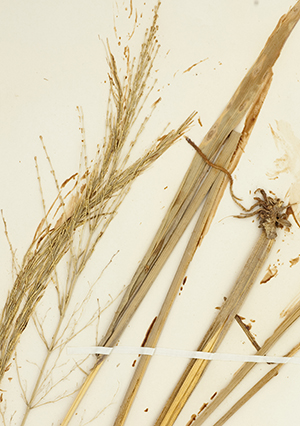
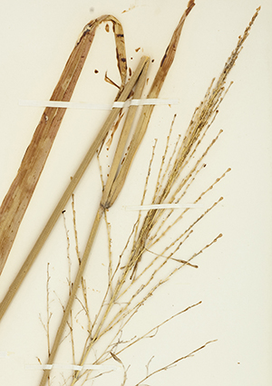

<!DOCTYPE html>
<html lang="en">
<head>
  <meta charset="UTF-8" />
  <script src="https://unpkg.com/leaflet@1.9.4/dist/leaflet.js"></script>
  <link rel="stylesheet" href="https://unpkg.com/leaflet@1.9.4/dist/leaflet.css"/>

  <!-- Opacity plugin -->
  <script src="https://cdn.jsdelivr.net/gh/dayjournal/Leaflet.Control.Opacity/dist/L.Control.Opacity.js"></script>
  <link rel="stylesheet" href="https://cdn.jsdelivr.net/gh/dayjournal/Leaflet.Control.Opacity/dist/L.Control.Opacity.css"/>

  <!-- Full screen control -->
  <link rel="stylesheet" href="https://api.mapbox.com/mapbox.js/plugins/leaflet-fullscreen/v1.0.1/leaflet.fullscreen.css" />
  <script src="https://api.mapbox.com/mapbox.js/plugins/leaflet-fullscreen/v1.0.1/Leaflet.fullscreen.min.js"></script>

  <!-- Coordinate control -->
  <link rel="stylesheet" href="https://cdn.jsdelivr.net/gh/MrMufflon/Leaflet.Coordinates/dist/Leaflet.Coordinates-0.1.5.css" />
  <script src="https://cdn.jsdelivr.net/gh/MrMufflon/Leaflet.Coordinates/dist/Leaflet.Coordinates-0.1.5.min.js"></script>

  <style>
    html, body { height: 100%; margin: 0; }
    #map { width: 550px; height: 650px; }

    /* Remove Leaflet’s default layers icon */
    .leaflet-control-layers .leaflet-control-layers-toggle { display: none !important; }

    /* Shared header styling */
    .layer-header{
      display:flex;justify-content:space-between;align-items:center;
      font-size:12px;font-weight:bold;background:#f8f8f8;
      padding:2px 4px;border-bottom:1px solid #ddd;position:sticky;top:0;z-index:2;
    }
    .layer-header.collapsed{ border-bottom:none; }
    .layer-toggle-btn{
      background:transparent;border:none;cursor:pointer;font-size:14px;line-height:14px;color:#444;
    }

    /* Inner padding for the white box of the Opacity control (collapsed and expanded) */
    .opacity-container {
      padding: 6px;            /* inset the text by a few px inside the white box */
    }

    /* keep header flush within that padded box */
    .opacity-container .layer-header { 
      margin: 0;
    }

    /* Remove the bottom border from the opacity header when collapsed */
    .opacity-container .layer-header.collapsed {
      border-bottom: none !important;
    }

    /* Also target the plugin's own border line to override its default */
    .opacity-container.collapsed,
    .opacity-container.collapsed .leaflet-control-opacity {
      border-top: none !important;
      border-bottom: none !important;
    }

    /* Adjust vertical spacing between stacked Leaflet controls (bottom-right corner) */
    .leaflet-bottom.leaflet-right .leaflet-control + .leaflet-control {
      margin-top: -11.5px !important;   /* pull controls closer together */
    }

  </style>
</head>
<body>
  <div id="map"></div>

  <script>
    // --- MAP ---
    const map = L.map('map', {
      fullscreenControl: true,
      fullscreenControlOptions: { position: 'topleft' }
    }).setView([40.880, -74.042], 11);

    // Coordinates control
    L.control.coordinates({
      position: "bottomleft",
      useDMS: false,
      labelTemplateLat: "N {y}",
      labelTemplateLng: "E {x}",
      useLatLngOrder: true,
      enableUserInput: false
    }).addTo(map);

    // Basemap
    const osm = L.tileLayer(
      'https://api.maptiler.com/maps/dataviz/{z}/{x}/{y}.png?key=Rx6A3aY9lysUK9DD8eX8',
      { attribution: '&copy; MapTiler &copy; OpenStreetMap contributors' }
    ).addTo(map);

    // Overlays
    const NASettlements = L.imageOverlay(
      'images/NAS_NorthernNJ_NewarkMuseum_bw.png',
      [[41.13148, -74.68303], [40.46424, -73.89119]],
      { attribution: 'Source: Newark Museum', opacity: 0.45 }
    );

    const NASPlaceNamesPaths = L.imageOverlay(
      'images/NASPlaceNamesPaths_bw.png',
      [[41.18708, -74.31719], [40.66014, -73.83676]],
      { attribution: 'Source: Kevin Wright & Bergen County Historical Society', opacity: 0.45 }
    ).addTo(map);

    const map1781 = L.tileLayer('https://allmaps.xyz/maps/19ebbf8cba8a3acb/{z}/{x}/{y}.png', {
      layers: 'map1781',
      format: 'image/png',
      transparent: true,
      attribution: 'Source: Library of Congress',
      opacity: .85
    });

    const nj1930ImageryWMS = L.tileLayer.wms('https://img.nj.gov/imagerywms/BlackWhite1930?', {
      layers: 'BlackWhite1930',
      format: 'image/png',
      transparent: true,
      attribution: 'New Jersey Dept. Env. Protection',
      opacity: 1
    });

    const SatelliteImagery2025 = L.tileLayer(
      'https://api.maptiler.com/maps/satellite/{z}/{x}/{y}@2x.jpg?key=Rx6A3aY9lysUK9DD8eX8',
      { attribution: '&copy; MapTiler & OpenStreetMap' }
    );

    const baseLayers = {
      'Basemap': osm,
      'Contemporary Satellite Imagery': SatelliteImagery2025,
    };

    const overlays = {
      'Historic Munsee Lenape Place Names and Pathways in Northern NJ': NASPlaceNamesPaths,
      'Historic Munsee Lenape Settlements in Northern NJ': NASettlements,
      '‘A sketch of the northern parts of New Jersey,’ 1781' : map1781,
      'Aerial Photography of New Jersey, 1930s': nj1930ImageryWMS,
    };

    // -------- Layer Control with header + manual toggle (starts collapsed) --------
    const layerControl = L.control.layers(baseLayers, overlays, {
      collapsed: false,                // we handle collapsing manually
      position: 'bottomright'
    }).addTo(map);

    let layerControlOpenWidth = null;  // will store true OPEN width

    map.whenReady(() => {
      const layerContainer = layerControl.getContainer();
      layerContainer.classList.add('leaflet-control-layers-expanded');
      layerContainer.style.boxSizing = 'border-box'; // ensures width includes padding/border

      // Header
      const header = document.createElement('div');
      header.className = 'layer-header';
      header.innerHTML = '<span>Map Layers</span>';

      const arrowBtn = document.createElement('button');
      arrowBtn.className = 'layer-toggle-btn';
      arrowBtn.innerHTML = '▸'; // collapsed initially
      header.appendChild(arrowBtn);
      layerContainer.insertBefore(header, layerContainer.firstChild);

      // Collapsing logic
      let expanded = false;
      const COLLAPSED_WIDTH = 122.9; // <<< tweak this to get a bit longer or shorter
      const contentEls = () => Array.from(layerContainer.children).filter(el => el !== header);

      const setExpanded = (isOpen) => {
        expanded = isOpen;
        contentEls().forEach(el => el.style.display = expanded ? 'block' : 'none');
        header.classList.toggle('collapsed', !expanded);
        arrowBtn.innerHTML = expanded ? '▾' : '▸';

        if (expanded) {
          // let it size naturally when open
          layerContainer.style.width = '';
        } else {
          // make the collapsed box a bit wider for extra right-side whitespace
          layerContainer.style.width = COLLAPSED_WIDTH + 'px';
        }
      };

      setExpanded(false);
      arrowBtn.addEventListener('click', () => setExpanded(!expanded));

      // Permanently remove default Leaflet SVG
      const nukeLeafletToggle = () => {
        const t = layerContainer.querySelector('.leaflet-control-layers-toggle');
        if (t) t.remove();
      };
      nukeLeafletToggle();
      new MutationObserver(nukeLeafletToggle).observe(layerContainer, { childList: true, subtree: true });

      L.DomEvent.disableClickPropagation(layerContainer);
      L.DomEvent.disableScrollPropagation(layerContainer);
    });

    // -------- Opacity Control (matches measured open width) --------
    const opacityControl = L.control({ position: 'bottomright' });

    opacityControl.onAdd = function () {
      const div = L.DomUtil.create('div', 'leaflet-control leaflet-bar opacity-container collapsed');
      div.style.background = 'white';
      div.style.borderRadius = '5px';
      div.style.boxShadow = '0 1.25px 1.25px rgba(0,0,0,0.5)';

      const header = document.createElement('div');
      header.className = 'layer-header collapsed';
      header.innerHTML = '<span>Layer Opacity</span>';

      const arrowBtn = document.createElement('button');
      arrowBtn.className = 'layer-toggle-btn';
      arrowBtn.innerHTML = '▸';
      header.appendChild(arrowBtn);
      div.appendChild(header);

      const content = document.createElement('div');
      content.style.display = 'none';
      div.appendChild(content);

      const pluginContainer = L.control.opacity(overlays, { collapsed: false }).addTo(map).getContainer();
      pluginContainer.style.border = 'none';
      pluginContainer.style.boxShadow = 'none';
      pluginContainer.style.margin = '4px 0 0 0';
      pluginContainer.style.padding = '0';
      content.appendChild(pluginContainer);

      let expanded = false;
      arrowBtn.addEventListener('click', () => {
        expanded = !expanded;
        content.style.display = expanded ? 'block' : 'none';
        header.classList.toggle('collapsed', !expanded);
        div.classList.toggle('collapsed', !expanded);
        arrowBtn.innerHTML = expanded ? '▾' : '▸';
      });

      L.DomEvent.disableClickPropagation(div);
      L.DomEvent.disableScrollPropagation(div);
      return div;
    };

    opacityControl.addTo(map);
  </script>

<script>
    // Add NJ Waterbodies GeoJSON layer
    fetch('https://opendata.arcgis.com/datasets/9ac002364ac3410d91a3fe125d2637a9_19.geojson')
      .then(response => response.json())
      .then(data => {
        const waterbodies = L.geoJSON(data, {
          style: {
            color: '#4A90E2',
            weight: 1,
            fillColor: '#4A90E2',
            fillOpacity: 0.4
          }
        });
        overlays['New Jersey Waterbodies, 2020'] = waterbodies;
        layerControl.addOverlay(waterbodies, 'New Jersey Waterbodies, 2020');
      })
      .catch(err => console.error('Error loading waterbodies GeoJSON:', err));
  </script>

  <script>
    // --- MARKERS ---
    const marker01 = L.marker([40.889444,-74.03674], { title: "Wild rice" })
      .addTo(map).bindPopup('<h4>pèhpastèk | Zizania aquatica L.</h3><p>Collector: Collector unspecified<br>Date: n.d.<br>Location: Hackensack<br>Bergen County, NJ</p><a href="https://sweetgum.nybg.org/science/vh/specimen-details/?irn=2037717"></a><h5><p>Source: <a href="https://sweetgum.nybg.org/science/vh/specimen-details/?irn=2037717">New York Botanical Garden</a>');

    const marker02 = L.marker([40.786409,-74.076348], { title: "Wild rice" })
      .addTo(map).bindPopup('<h4>pèhpastèk | Zizania palustris L.</h3><p>Collector: E. W. Berry<br>Date: July 27, 1895<br>Location: "Salt meadows; common."<br>Bergen County, NJ</p><a href="https://sweetgum.nybg.org/science/vh/specimen-details/?irn=2038005"></a><h5><p>Source: <a href="https://sweetgum.nybg.org/science/vh/specimen-details/?irn=2038005">New York Botanical Garden</a>');

    const marker03 = L.marker([40.839398,-74.076734], { title: "Wild rice" })
      .addTo(map).bindPopup('<h4>pèhpastèk | Zizania palustris L.</h3><p>Collector: G. V. Nash <br>Date: July 1889<br>Location: Wood-Ridge<br>Bergen County, NJ</p><a href="https://sweetgum.nybg.org/science/vh/specimen-details/?irn=2038002"></a><h5><p>Source: <a href="https://sweetgum.nybg.org/science/vh/specimen-details/?irn=2038002">New York Botanical Garden</a>');

    const marker04 = L.marker([40.833667,-74.040062], { title: "Wild rice" })
      .addTo(map).bindPopup('<h4>pèhpastèk | Zizania aquatica L.</h3><p>Collector: G. V. Nash <br>Date: September 21, 1901<br>Location: Moonachie<br>Bergen County, NJ</p><a href="https://sweetgum.nybg.org/science/vh/specimen-details/?irn=2037707"></a><h5><p>Source: <a href="https://sweetgum.nybg.org/science/vh/specimen-details/?irn=2037707">New York Botanical Garden</a>');

    const marker05 = L.marker([40.810691,-74.027767], { title: "Wild rice" })
      .addTo(map).bindPopup('<h4>pèhpastèk | Zizania palustris L.</h3><p>Collector: K. K. Mackenzie <br>Date: August 24, 1913<br>Location: Babbitt<br>Hudson County, NJ</p><a href="https://sweetgum.nybg.org/science/vh/specimen-details/?irn=2038003"></a><h5><p>Source: <a href="https://sweetgum.nybg.org/science/vh/specimen-details/?irn=2038003">New York Botanical Garden</a>');

    const marker06 = L.marker([40.787041,-74.038217], { title: "Wild rice" })
      .addTo(map).bindPopup('<h4>pèhpastèk | Zizania aquatica L.</h3><p>Collector: J. V. Monachino<br>Date: August 11, 1936<br>Location: "Near Union City"<br>Hudson County, NJ</p><a href="https://sweetgum.nybg.org/science/vh/specimen-details/?irn=2037770"></a><h5><p>Source: <a href="https://sweetgum.nybg.org/science/vh/specimen-details/?irn=2037770">New York Botanical Garden</a>');

    const marker07 = L.marker([40.91259,-73.8371], { title: "Wild rice" })
      .addTo(map).bindPopup('<h4>pèhpastèk | Zizania aquatica L.</h3><p>Collector: E. P. Bicknell<br>Date: September 30, 1893<br>Location: "Bronx above Mt. Vernon"<br>Westchester County, NY</p><a href="https://sweetgum.nybg.org/science/vh/specimen-details/?irn=2037708"></a><h5><p>Source: <a href="https://sweetgum.nybg.org/science/vh/specimen-details/?irn=2037708">New York Botanical Garden</a>');

    const marker08 = L.marker([41.3915,-73.956], { title: "Wild rice" })
      .addTo(map).bindPopup('<h4>pèhpastèk | Zizania aquatica L.</h3><p>Collector: E. A. Mearns<br>Date: April 9, 1883<br>Location: West Point<br>Orange County, NY</p><a href="https://sweetgum.nybg.org/science/vh/specimen-details/?irn=2037790"></a><h5><p>Source: <a href="https://sweetgum.nybg.org/science/vh/specimen-details/?irn=2037790">New York Botanical Garden</a>');

    const marker09 = L.marker([40.7654,-73.8174], { title: "Wild rice" })
      .addTo(map).bindPopup('<h4>pèhpastèk | Zizania aquatica L.</h3><p>Collector: W. C. Ferguson<br>Date: August 27, 1921<br>Location: Long Island<br>Queens County, NY</p><a href="https://sweetgum.nybg.org/science/vh/specimen-details/?irn=2037740"></a><h5><p>Source: <a href="https://sweetgum.nybg.org/science/vh/specimen-details/?irn=2037740">New York Botanical Garden</a>');

    const marker10 = L.marker([40.6989,-73.7887], { title: "Wild rice" })
      .addTo(map).bindPopup('<h4>pèhpastèk | Zizania aquatica L.</h3><p>Collector: W. C. Ferguson<br>Date: September 20, 1929<br>Location: Long Island<br>Queens County, NY</p><a href="https://sweetgum.nybg.org/science/vh/specimen-details/?irn=2037734"></a><h5><p>Source: <a href="https://sweetgum.nybg.org/science/vh/specimen-details/?irn=2037734">New York Botanical Garden</a>');

    const marker11 = L.marker([40.6631,-73.61039], { title: "Wild rice" })
      .addTo(map).bindPopup('<h4>pèhpastèk | Zizania aquatica L.</h3><p>Collector: E. P. Bicknell<br>Date: September 12, 1909<br>Location: Baldwin, Long Island<br>Nassau County, NY</p><a href="https://sweetgum.nybg.org/science/vh/specimen-details/?irn=2037726"></a><h5><p>Source: <a href="https://sweetgum.nybg.org/science/vh/specimen-details/?irn=2037726">New York Botanical Garden</a>');

    const marker12 = L.marker([40.73971,-73.075248], { title: "Wild rice" })
      .addTo(map).bindPopup('<h4>pèhpastèk | Zizania aquatica L.</h3><p>Collector: W. C. Ferguson<br>Date: September 21, 1928<br>Location: Long Island<br>Suffolk County, NY</p><a href="https://sweetgum.nybg.org/science/vh/specimen-details/?irn=2037801"></a><h5><p>Source: <a href="https://sweetgum.nybg.org/science/vh/specimen-details/?irn=2037801">New York Botanical Garden</a>');

    const marker13 = L.marker([40.868213,-72.81512], { title: "Wild rice" })
      .addTo(map).bindPopup('<h4>pèhpastèk | Zizania palustris L.</h3><p>Collector: W. C. Ferguson<br>Date: July 21, 1929<br>Location: Manorville, Long Island<br>Suffolk County, NY</p><a href="http://sweetgum.nybg.org/science/vh/specimen-details/?irn=2037780"></a><h5><p>Source: <a href="http://sweetgum.nybg.org/science/vh/specimen-details/?irn=2037780">New York Botanical Garden</a>');

    const marker14 = L.marker([40.741770,-73.068081], { title: "Wild rice" })
      .addTo(map).bindPopup('<h4>pèhpastèk | Zizania aquatica L.</h3><p>Collector: W. C. Ferguson<br>Date: July 21, 1928<br>Location: Bayport, Long Island<br>Suffolk County, NY</p><a href="https://sweetgum.nybg.org/science/vh/specimen-details/?irn=2037730"></a><h5><p>Source: <a href="https://sweetgum.nybg.org/science/vh/specimen-details/?irn=2037730">New York Botanical Garden</a>');
    
    const marker15 = L.marker([40.78433,-72.88936], { title: "Wild rice" })
      .addTo(map).bindPopup('<h4>pèhpastèk | Zizania aquatica L.</h3><p>Collector: W. C. Ferguson<br>Date: August 14, 1922<br>Location: South Haven, Long Island<br>Suffolk County, NY</p><a href="https://sweetgum.nybg.org/science/vh/specimen-details/?irn=2037799"></a><h5><p>Source: <a href="https://sweetgum.nybg.org/science/vh/specimen-details/?irn=2037799">New York Botanical Garden</a>');

    const marker16 = L.marker([40.79118,-72.88818], { title: "Wild rice" })
      .addTo(map).bindPopup('<h4>pèhpastèk | Zizania aquatica L.</h3><p>Collector: W. C. Ferguson<br>Date: August 14, 1922<br>Location: South Haven, Long Island<br>Suffolk County, NY</p><a href="https://sweetgum.nybg.org/science/vh/specimen-details/?irn=2037800"></a><h5><p>Source: <a href="https://sweetgum.nybg.org/science/vh/specimen-details/?irn=2037800">New York Botanical Garden</a>');

    const marker17 = L.marker([39.9523,-75.16379], { title: "Wild rice" })
      .addTo(map).bindPopup('<h4>pèhpastèk | Zizania palustris L.</h3><p>Collector: Thomas C. Porter<br>Date: n.d.<br>Location: Philadelphia, PA</p><a href="https://sweetgum.nybg.org/science/vh/specimen-details/?irn=2038053"></a><h5><p>Source: <a href="https://sweetgum.nybg.org/science/vh/specimen-details/?irn=2038053">New York Botanical Garden</a>');
    
    // Add 1666 Newark-Lenape Treaty Line (northern boundary), Panepack, and Sikakes geoJSON data as constants
    const Newark_1666_Treaty_line = [{
        "type": "FeatureCollection",
        "name": "1666Newarktreatyline",
        "crs": { "type": "name", "properties": { "name": "urn:ogc:def:crs:OGC:1.3:CRS84" } },
        "features": [
        { "type": "Feature", "properties": { "id": 1, "line": "1666Newarktreatyline" }, "geometry": { "type": "MultiLineString", "coordinates": [ [ [ -74.130227594985925, 40.8202067908732 ], [ -74.130592650884466, 40.820360509182834 ], [ -74.091972437522799, 40.758209677803393 ] ] ] } }
        ]
        }];
    
    const Panepack = [{
        "type": "FeatureCollection",
        "name": "Panepack, or Pèhpastèk",
        "crs": { "type": "name", "properties": { "name": "urn:ogc:def:crs:OGC:1.3:CRS84" } },
        "features": [
        { "type": "Feature", "properties": { "id": 1, "areas": "Panepack" }, "geometry": { "type": "MultiPolygon", "coordinates": [ [ [ [ -74.040929619126231, 40.806269090205753 ], [ -74.040335248628693, 40.806086395820095 ], [ -74.039809910051488, 40.805711153979232 ], [ -74.039734861683314, 40.805035718665685 ], [ -74.040396941732894, 40.803998160111334 ], [ -74.041414900991541, 40.802908765115248 ], [ -74.041682785006969, 40.802551586428002 ], [ -74.042022104759852, 40.802087254134591 ], [ -74.042289988775281, 40.801747934381709 ], [ -74.042611449593807, 40.801408614628826 ], [ -74.042950769346675, 40.801176448482117 ], [ -74.043968728605321, 40.800622821516896 ], [ -74.045471187284321, 40.799639303696445 ], [ -74.045789546627574, 40.799317957902282 ], [ -74.046411631384856, 40.798965552699038 ], [ -74.047085382382264, 40.798558494804766 ], [ -74.047899498170807, 40.798277765222515 ], [ -74.048940465698792, 40.798034689537111 ], [ -74.050386012102138, 40.797763649586486 ], [ -74.051289478604232, 40.79749260963586 ], [ -74.052238118431433, 40.797086049709911 ], [ -74.053186758258633, 40.796453623158449 ], [ -74.053999878110531, 40.795595329981452 ], [ -74.054632304661993, 40.794511170178943 ], [ -74.054928435816322, 40.791637003136451 ], [ -74.056167298787003, 40.790159897286792 ], [ -74.05785321657865, 40.788537304452362 ], [ -74.060984887457082, 40.785998111848222 ], [ -74.067003436097394, 40.781838017902494 ], [ -74.071568878494531, 40.778003046288902 ], [ -74.073760290845144, 40.775081163154738 ], [ -74.075860394347828, 40.771063573845261 ], [ -74.077686571306685, 40.767593837623444 ], [ -74.078457114978903, 40.765509970004352 ], [ -74.080258387379743, 40.762892496046867 ], [ -74.08118716846144, 40.761654121271278 ], [ -74.081750066086698, 40.760387601614433 ], [ -74.082164107926033, 40.760020847885237 ], [ -74.083439335082431, 40.759800981134134 ], [ -74.084173083306922, 40.759835250430854 ], [ -74.084974500168457, 40.759610853709624 ], [ -74.085594029243225, 40.759185354231043 ], [ -74.087924616804898, 40.758613700678183 ], [ -74.089157896185668, 40.758569011789625 ], [ -74.090211231016369, 40.758701647378622 ], [ -74.091690373468111, 40.758456813429014 ], [ -74.087265016551598, 40.763494742552645 ], [ -74.086649389648514, 40.764418182907271 ], [ -74.086473496247635, 40.765209703211241 ], [ -74.086253629496525, 40.766440957017409 ], [ -74.085901842694767, 40.767892077574686 ], [ -74.086121709445862, 40.769870878334601 ], [ -74.086649389648514, 40.771497892292757 ], [ -74.08763439269346, 40.774004373255323 ], [ -74.088557833048085, 40.775367547112154 ], [ -74.08899756655029, 40.776378934167219 ], [ -74.089218689322081, 40.777041756916191 ], [ -74.089241642717212, 40.777431964633429 ], [ -74.088909619849844, 40.778005948125376 ], [ -74.088030152845434, 40.779017335180448 ], [ -74.086623005638387, 40.780160642286177 ], [ -74.085592052891272, 40.781265181620427 ], [ -74.084650963690876, 40.782183317425698 ], [ -74.083388526958629, 40.783698241504389 ], [ -74.082654018314415, 40.784386843358341 ], [ -74.081758835904282, 40.785580419905195 ], [ -74.081276814606511, 40.786039487807827 ], [ -74.08061116614769, 40.786177208178614 ], [ -74.080204618795747, 40.786978518709482 ], [ -74.079555309971624, 40.787783945837838 ], [ -74.078224013053998, 40.789161149545741 ], [ -74.077535411200046, 40.789872704794824 ], [ -74.076818670828786, 40.790496386727106 ], [ -74.076071123875039, 40.791859560583937 ], [ -74.075587417022618, 40.793134787740328 ], [ -74.075022784984029, 40.79416253743176 ], [ -74.074964630945288, 40.794899498328668 ], [ -74.075125304711207, 40.795358566231307 ], [ -74.074689190203713, 40.795450379811832 ], [ -74.073725147608172, 40.795611053577751 ], [ -74.072623384641858, 40.795886494319333 ], [ -74.069985345783806, 40.796834328388783 ], [ -74.068565956837901, 40.797557938439638 ], [ -74.067480541761611, 40.798392873113706 ], [ -74.067035243268762, 40.799199976631975 ], [ -74.066228139750507, 40.800034911306042 ], [ -74.065114893518412, 40.801175988693934 ], [ -74.062832738742628, 40.803096338444291 ], [ -74.061663830198924, 40.803931273118366 ], [ -74.0601331166298, 40.804571389701813 ], [ -74.05863023421648, 40.805016688194648 ], [ -74.057322169893766, 40.805350662064278 ], [ -74.056654222154521, 40.805489817843288 ], [ -74.055596638234036, 40.805628973622305 ], [ -74.054260742755517, 40.80587945402452 ], [ -74.052924847277012, 40.805990778647732 ], [ -74.051644614110103, 40.806185596738345 ], [ -74.049724264359753, 40.806408245984763 ], [ -74.048555355816049, 40.806575232919577 ], [ -74.047553434207174, 40.806519570607975 ], [ -74.04543826636619, 40.806909206789207 ], [ -74.043434423148426, 40.80668655754279 ], [ -74.042126358825726, 40.80649173945217 ], [ -74.040929619126231, 40.806269090205753 ] ] ] ] } }
        ]
        }
        ];

    const Sikakes = [{
        "type": "FeatureCollection",
        "name": "Sëkëxkuk",
        "crs": { "type": "name", "properties": { "name": "urn:ogc:def:crs:OGC:1.3:CRS84" } },
        "features": [
        { "type": "Feature", "properties": { "id": 1, "areas": "Sikakes" }, "geometry": { "type": "MultiPolygon", "coordinates": [ [ [ [ -74.091682425236257, 40.758440821874245 ], [ -74.090200431306002, 40.758702191425662 ], [ -74.08924269996055, 40.75857091548766 ], [ -74.088338041888647, 40.75857091548766 ], [ -74.087825402314579, 40.758621174269436 ], [ -74.08559832540179, 40.759186928094515 ], [ -74.08500076555697, 40.759594355261441 ], [ -74.084191627275388, 40.759836686904379 ], [ -74.083635999230978, 40.759793946285576 ], [ -74.083016260258375, 40.759858057213776 ], [ -74.082364632935594, 40.759984787702706 ], [ -74.082054596335382, 40.760135871235981 ], [ -74.081755412003787, 40.760413685258179 ], [ -74.081221154268775, 40.761631792893979 ], [ -74.080355441930834, 40.762725163668222 ], [ -74.078503135738089, 40.765497214861455 ], [ -74.077761454413888, 40.767522263870788 ], [ -74.075698345986041, 40.771369538233252 ], [ -74.073822146795706, 40.774994013941857 ], [ -74.071697209076333, 40.777957555844772 ], [ -74.070098175675469, 40.779201248489883 ], [ -74.067504188158537, 40.781546497477805 ], [ -74.063787055282873, 40.784066017817516 ], [ -74.061846611680764, 40.785383602979437 ], [ -74.060169685111049, 40.786653275953654 ], [ -74.056482842267044, 40.789802544051582 ], [ -74.054925696166592, 40.791623207184415 ], [ -74.054638223040357, 40.794450026259085 ], [ -74.054067736931842, 40.795607322248344 ], [ -74.053248769596877, 40.796438382048898 ], [ -74.052013819213087, 40.797260526963029 ], [ -74.051260977166265, 40.7975328899945 ], [ -74.049883664698413, 40.797857285178139 ], [ -74.048789957785701, 40.798060660430501 ], [ -74.047863470524945, 40.798286632933127 ], [ -74.047093095949108, 40.798542834917292 ], [ -74.046122431748856, 40.799141289537005 ], [ -74.045786713303656, 40.799301850532537 ], [ -74.045509380675, 40.799622972523601 ], [ -74.045071487050819, 40.799893006925174 ], [ -74.044159208667125, 40.800484163317819 ], [ -74.043714016815869, 40.800783390627672 ], [ -74.042969597654775, 40.80117749488943 ], [ -74.042604686301289, 40.801411038155663 ], [ -74.042028126362794, 40.802067878591927 ], [ -74.041644919173606, 40.802574712906221 ], [ -74.041119580728562, 40.803216793227939 ], [ -74.040399672489059, 40.80399507240579 ], [ -74.039738135187889, 40.805006835336989 ], [ -74.039777049146778, 40.805648915658708 ], [ -74.04004944685903, 40.805940770350404 ], [ -74.040419129468503, 40.806174254103752 ], [ -74.039893791023459, 40.806057512227078 ], [ -74.039348995598957, 40.805862942432618 ], [ -74.038395603606105, 40.805473802843693 ], [ -74.036116608458713, 40.80443214602861 ], [ -74.035649759947418, 40.802824112267501 ], [ -74.035909120231466, 40.799971149142962 ], [ -74.036090411231399, 40.798448198401857 ], [ -74.036329772381094, 40.797397668911536 ], [ -74.036669353534677, 40.795710480190451 ], [ -74.037194132088331, 40.795855119280183 ], [ -74.037726045754312, 40.795283312089246 ], [ -74.038324448628543, 40.794711504898309 ], [ -74.038654179693779, 40.794357368599798 ], [ -74.03894944718607, 40.794166293390674 ], [ -74.039228701860722, 40.793727464616239 ], [ -74.039441467327109, 40.792982785483858 ], [ -74.039441467327109, 40.792357786926324 ], [ -74.039398166834857, 40.79164798209225 ], [ -74.039317624737308, 40.790896255848466 ], [ -74.039332675980916, 40.790063586292277 ], [ -74.039643908321779, 40.787055006997306 ], [ -74.040421989173922, 40.785758205577061 ], [ -74.04125194208288, 40.783994555645528 ], [ -74.042652487616749, 40.783475835077425 ], [ -74.043638056696139, 40.782594010111659 ], [ -74.04467549783233, 40.782282777770796 ], [ -74.045920427195767, 40.782594010111659 ], [ -74.046854124218342, 40.783631451247857 ], [ -74.047995309468163, 40.784098299759144 ], [ -74.049395855002032, 40.783942683588712 ], [ -74.050692656422271, 40.783008986566138 ], [ -74.051678225501661, 40.782023417486748 ], [ -74.052715666637866, 40.781660313089077 ], [ -74.053960596001303, 40.781660313089077 ], [ -74.05504990919431, 40.781297208691413 ], [ -74.055724245932836, 40.780363511668831 ], [ -74.056657942955411, 40.778911094078161 ], [ -74.057384151750753, 40.776939955919381 ], [ -74.057643512034801, 40.775643154499136 ], [ -74.057420410894821, 40.774817306975301 ], [ -74.05684981826991, 40.773779865839103 ], [ -74.056175481531383, 40.772016215907563 ], [ -74.056382969758616, 40.769163252783024 ], [ -74.05684981826991, 40.76584344114719 ], [ -74.057161050610773, 40.765376592635903 ], [ -74.058198491746964, 40.764598511783753 ], [ -74.058872828485491, 40.764027919158849 ], [ -74.059443421110402, 40.762679245681788 ], [ -74.060584606360223, 40.762004908943261 ], [ -74.061362687212366, 40.761330572204734 ], [ -74.061570175439599, 40.760345003125344 ], [ -74.061678575113987, 40.759871696299719 ], [ -74.062793945969005, 40.759532235604716 ], [ -74.064054799979033, 40.759871696299719 ], [ -74.06531565398906, 40.75982320191472 ], [ -74.066721991154083, 40.758998797369706 ], [ -74.068370800244125, 40.757834932129683 ], [ -74.069777137409147, 40.756816550044661 ], [ -74.070698530724172, 40.755846662344638 ], [ -74.072114149137718, 40.754435689256148 ], [ -74.074089813717833, 40.752918661096423 ], [ -74.075271684493444, 40.75246002467604 ], [ -74.07694276833864, 40.752464591145724 ], [ -74.077243623528148, 40.752353163297755 ], [ -74.077923333400747, 40.752096879247432 ], [ -74.078045904033502, 40.752096879247432 ], [ -74.078469329855778, 40.752197164310601 ], [ -74.079193610867563, 40.75230859215857 ], [ -74.081231547111088, 40.752449492020133 ], [ -74.08243946383709, 40.75226365867767 ], [ -74.084050019471761, 40.751984908663978 ], [ -74.085149533414665, 40.751783589209644 ], [ -74.0871371271637, 40.751336157808979 ], [ -74.088193861693469, 40.75106306911028 ], [ -74.089571178608651, 40.750706866459801 ], [ -74.0907703941986, 40.750540638556245 ], [ -74.091839002150039, 40.750481271447832 ], [ -74.09258702771605, 40.75057625882129 ], [ -74.09301447089662, 40.750837474098311 ], [ -74.093489407763926, 40.751359904652347 ], [ -74.093596268559068, 40.751763600989555 ], [ -74.093833736992721, 40.752274158121914 ], [ -74.093833736992721, 40.752487879712199 ], [ -74.093738749619263, 40.753520867398592 ], [ -74.093679382510857, 40.754245146121235 ], [ -74.093418167233835, 40.754708209566857 ], [ -74.093263812751957, 40.755290007229306 ], [ -74.092970889571376, 40.75598351262169 ], [ -74.092821390335217, 40.756279054464272 ], [ -74.092733246276907, 40.756498550452619 ], [ -74.092674830910298, 40.756703543570161 ], [ -74.092591469323679, 40.756741435200446 ], [ -74.092417167824365, 40.756923315025816 ], [ -74.092333806237747, 40.757234026394144 ], [ -74.092220131346892, 40.757446219523736 ], [ -74.092159504738433, 40.757643256001217 ], [ -74.092167083064496, 40.757825135826579 ], [ -74.092044939134752, 40.758118587297794 ], [ -74.091682425236257, 40.758440821874245 ] ] ] ] } }
        ]
        }
        ];

    // Add the 1666 Newark-Lenape Treaty Line and Panepack and Sikakes shapes to the map
    L.geoJSON(Newark_1666_Treaty_line, {
  style: {
    color: '#3e2e66',     // visible aubergine line
    weight: 3.2,          // visual thickness
    dashArray: '8 6',
    dashOffset: '0'
  },
  onEachFeature: function (feature, layer) {
    // Create an invisible, thicker "hit zone" for hover
    const hoverZone = L.geoJSON(feature, {
      style: {
        color: 'transparent',
        weight: 15,       // much thicker, for easier hovering
      }
    });

    hoverZone.on('mouseover', function (e) {
      layer.openPopup(e.latlng);
    });

    hoverZone.on('mouseout', function () {
      layer.closePopup();
    });

    layer.bindPopup('<strong>Approximate northern bound of 1666 Newark Treaty line</strong>');
    hoverZone.addTo(map);
  }
}).addTo(map);


    L.geoJSON(Panepack, {
        style: {
            color: '#b39c57', // light yellow-brown color border
            weight: 2.0, // line thickness
            fillColor: '#c4b070', // light yellow-brown color border
            fillOpacity: 0.4 // opacity
        },
        onEachFeature: function (feature, layer) {
            layer.bindPopup('<h4>Pèhpastèk: <span style="font-weight: normal;">‘<b><a href="https://talk-lenape.org/detail?id=8380">that which swells up</a></b>,’ or ‘<b><a href="https://talk-lenape.org/detail?id=8380">rice</a></b>.’ <br><br>Colonial settlers rendered <b>Pèhpastèk</b> as <b>Panepack</b>. <br><br> The phonetic approximation both distorted and preserved traces of the original Munsee place name, which referred to the <b>wild rice</b> that grew here.</span></h4>');
            layer.on('mouseover', function () {
            layer.openPopup();
            });
        }
}).addTo(map);

    L.geoJSON(Sikakes, {
        style: {
            color: '#7e88d0',      // ashy purple border
            weight: 2.0,           // line thickness
            fillColor: '#7e7ecc',  // purple fill
            fillOpacity: 0.4       // opacity
        },
        onEachFeature: function (feature, layer) {
            layer.bindPopup('<h4>Sëkëxkuk: <span style="font-weight: normal;">‘<b><a href="https://talk-lenape.org/results?query=s%C3%ABk%C3%ABxkuk&lang=lenape">Place of the black snakes</a></b>.’ <br><br>Departing from Munsee Lenape tradition, colonial settlers rendered <b>Sëkëxkuk</b> as <b>Sikakes</b>. <br><br>Today, the spot is known as <b>Secaucus</b> in a further phonetic and orthographic distortion of the phrase. <br><br>The historic presence of snakes in this area, where freshwater and saltwater once met at the penultimate bend of the Hackensack River, is reflected in the original Munsee place name and in the name of nearby <b>Snake Hill</b>.</span></h4>');
            layer.on('mouseover', function () {
            layer.openPopup();
            });
        }
}).addTo(map);
    
  </script>
</body>
</html>
